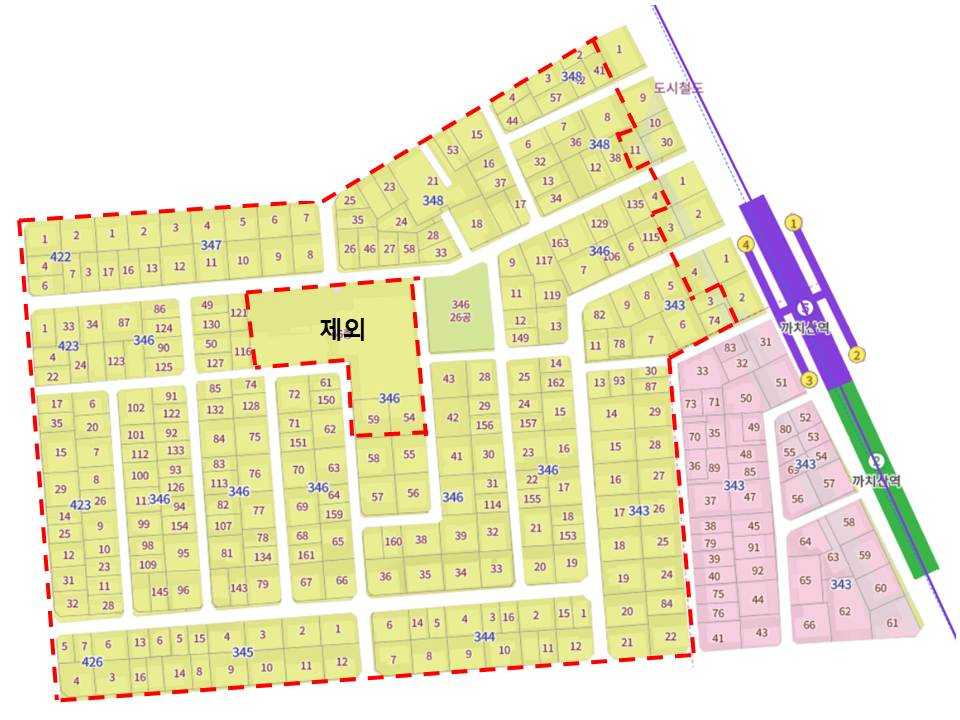

본인 확인
동의 의사가 실제 토지·건물 소유자 본인의 것임을 확인합니다. 주민등록상 성명·주소와 등기부상 명의를 대조해 확인합니다.
역세권 도심 공공주택 복합사업
우리 구역의 보완 후 재접수에 도움이 되고, 이후 선정되더라도 도움이 될 수 있도록 공모용 동의서를 재모집합니다. 10/19(월) 오전 10시부터 유림부동산에서 받습니다.
우리 구역의 보완 후 재접수에 도움이 되고, 이후 선정되더라도 도움이 될 수 있도록 공모용 동의서를 재모집합니다. 마감일은 확정되는 대로 안내드립니다.
국토교통부는 서울 신규 후보지 11곳을 선정하고, 강서4·강서6·동작4 3곳은 보류했습니다. 보류는 탈락·취소가 아닙니다. 국토부 보도자료에 따르면 이번에 선정되지 않은 지역은 주민 의향률 확보, 지구계 변경 등 보완을 거쳐 재접수할 수 있습니다. 구체적인 보완 사항은 구청·LH 확인 후 이 페이지와 주민 카톡방에 안내드리겠습니다. (출처: 국토교통부 보도자료, 2026. 9. 30.)
보류 사유: 추진위가 확인한 바로는 구역 경계(구역계)와 진입로(출입구) 문제를 보완하면 다시 검토받을 수 있는 사안입니다. 국토부 보도자료에는 지역별 개별 사유가 공개되어 있지 않으며, 보도자료는 선정 심의 기준으로 ①노후도 등 법정 요건 ②사업성 ③주민 의향률을 종합 검토했다고 밝혔고, 선정에서 제외된 사업지는 주민 의향률 확보, 지구계 변경 등 보완 후 재접수할 수 있다고 안내했습니다.
진행 상황: 구역계와 진입로를 어떻게 보완할지는 아직 확정된 것이 없습니다. 구청·LH 확인이 이루어지는 대로 이 페이지와 주민 카톡방에 안내드리겠습니다. 확인되지 않은 소문이나 전망에 의존하지 마시고 공식 안내를 기다려 주세요.
이번에 선정되지 않은 지역은 주민 참여 의향률 확보, 구역(지구)계 변경 등 보완을 거쳐 다시 신청할 수 있으며, 국토부는 내년 상반기 수도권 대상 추가 공모를 예정하고 있습니다. 보완 과정에서 주민 여러분의 동의와 참여가 다시 중요해집니다. 주위에 널리 알려주세요.
참고: 이번에 선정된 11곳은 10월 중 주민설명회, 2027년 상반기 예정지구 지정, 2030년 하반기 착공을 목표로 합니다(국토부 목표 일정이며 확정 일정은 아닙니다). 강서구에서 선정된 곳은 강서01(화곡역 동측, 약 2,335호) 1곳으로, 우리 구역(강서6)과는 별개의 공모 신청지입니다.
추진위의 초기 안내 착오로 서명만 받은 분들이 계십니다. 본인 확인을 위해 도장 날인이 필요합니다. 번거로우시더라도 주민등록증, 등기부등본, 도장을 지참하고 접수 장소로 재방문 부탁드립니다.
접수 시 필요한 서류입니다. 의향서 등 작성 서류는 현장에 준비되어 있습니다.
세 가지가 모두 꼭 필요합니다. 공유지분자는 두 분 모두 도장과 주민등록증이 필요합니다.
현장에서 작성 가능 · 원본 수기 작성만 인정 (복사본 불가)
현장에서 작성 · 공모 신청 목적 외 사용되지 않음
뒷자리는 가려도 무관
발행일자 무관 · 제출 아닌 확인용
두 분 모두 도장 날인 · 주민등록증 필요
번거로우실 수 있지만, 다음 네 가지 이유로 반드시 필요합니다.
동의 의사가 실제 토지·건물 소유자 본인의 것임을 확인합니다. 주민등록상 성명·주소와 등기부상 명의를 대조해 확인합니다.
서명만으로는 제3자 위조 가능성이 있어 도장 날인으로 보완합니다. 훗날 동의 여부 분쟁 시 객관적 증거가 됩니다.
동의서가 정확히 작성되어야 제출 후 보완 요청이나 재방문 없이 한 번에 마무리됩니다.
장기간 진행되는 사업 특성상, 절차적 정당성을 입증할 자료가 보존되어야 사업 전체의 안정성이 확보됩니다.
제출하신 신분증 사본과 동의서는 공모 신청 목적 외에는 사용되지 않으며, 관련 법령에 따라 안전하게 보관·관리됩니다. 보관 기간·파기 시점·열람 권한 등 자세한 사항은 추진위원회로 문의해 주시기 바랍니다.
화곡1동에서 추진 중인 도심 공공주택 복합사업의 기본 정보입니다.
붉은 점선 안쪽이 본 사업의 대상 구역입니다. 지번 단위로 표시되어 있으니, 본인 주소의 지번이 구역 내에 포함되는지 확인해 보실 수 있습니다.

본인 필지가 구역에 포함되는지 불분명하시면 아래 연락처로 문의해 주시기 바랍니다. 큰 지번에 가려 표기가 안 된 경우도 포함된 구역일 수 있습니다.
10/19(월)부터 공모용 동의서는 유림부동산에서 접수합니다. 방문 전 유림부동산(02-2606-8853)으로 문의해 주세요. (참고: 추진위원장님 010-8367-2346)
서울 강서구 곰달래로 89 (화곡동 426-3)
까치산역 3번 출구에서 약 460m · 유림아파트 앞쪽
지도에서 보기지난 접수 기간에 장소와 일손을 내어 주신 분들입니다. 감사드립니다.
팔팔부동산 · 일등부동산 · 화곡동 교회
이번 접수의 우편 접수 가능 여부는 확인되는 대로 안내드립니다.
문의: 유림부동산 02-2606-8853 (참고: 추진위원장님 010-8367-2346)
주민분들께서 실제로 문의하신 내용을 모아 정리했습니다. 항목을 누르시면 내용이 펼쳐집니다.
짧은 공모 기간 안에 주민 동의를 확보하려면 많은 손길이 필요합니다. 아래 분야 중 가능한 것으로 도움 주시면 큰 힘이 됩니다. (중복 지원 가능)
주민분들께 사업을 알리고 참여를 독려하는 업무. 퇴근 후 전화 봉사도 가능합니다.
유림부동산에서 방문하시는 분들의 동의서 접수 및 안내를 돕는 업무입니다.
직접 세대를 방문하여 동의서를 수령하고 설명드리는 업무입니다.
활동 기간 · 10/19(월)부터 (마감일 미정) · 문의 · 최고야 추진위원장님 010-8367-2346
홍보물 인쇄·우편비, 설명회 대관료, 사무용품 등 운영 실비를 위한 자발적 후원입니다.
궁금한 점은 아래 중 편한 곳으로 문의해 주시기 바랍니다.
현재 접수처 · 유림부동산
곰달래로 89
02-2606-8853참고 · 추진위원장님
최고야
010-8367-2346지난 접수 협력 · 팔팔부동산
류형태 이사
010-3734-8758 02-2693-8758지난 접수 협력 · 일등부동산
이은미 팀장
010-2487-2934주민 단톡방 참여하기
최신 공지, 접수 현황, 질문과 답변을 실시간으로 받아보실 수 있습니다.